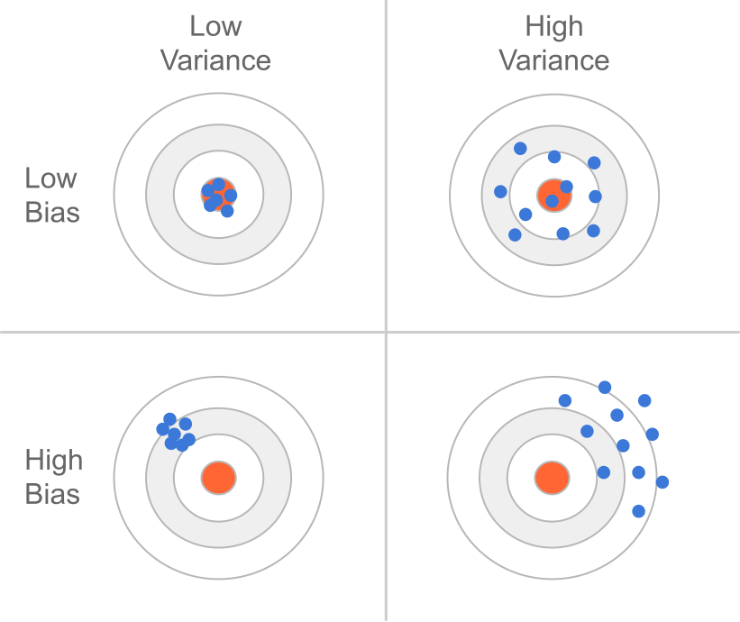
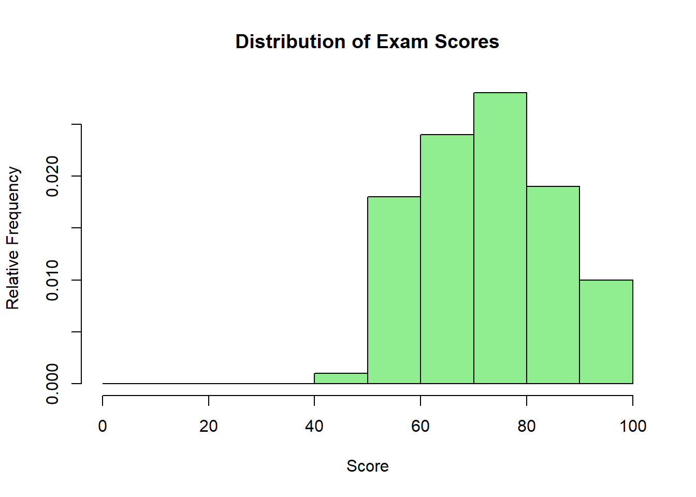
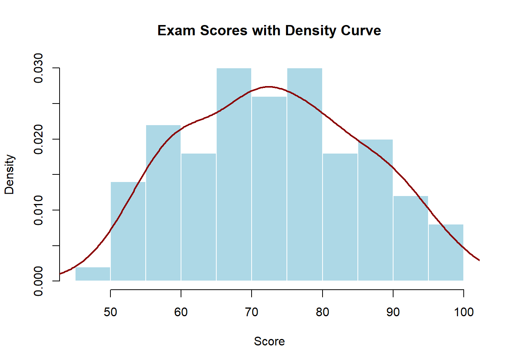
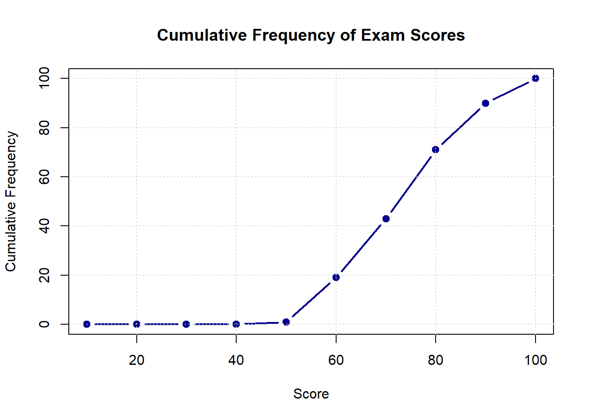
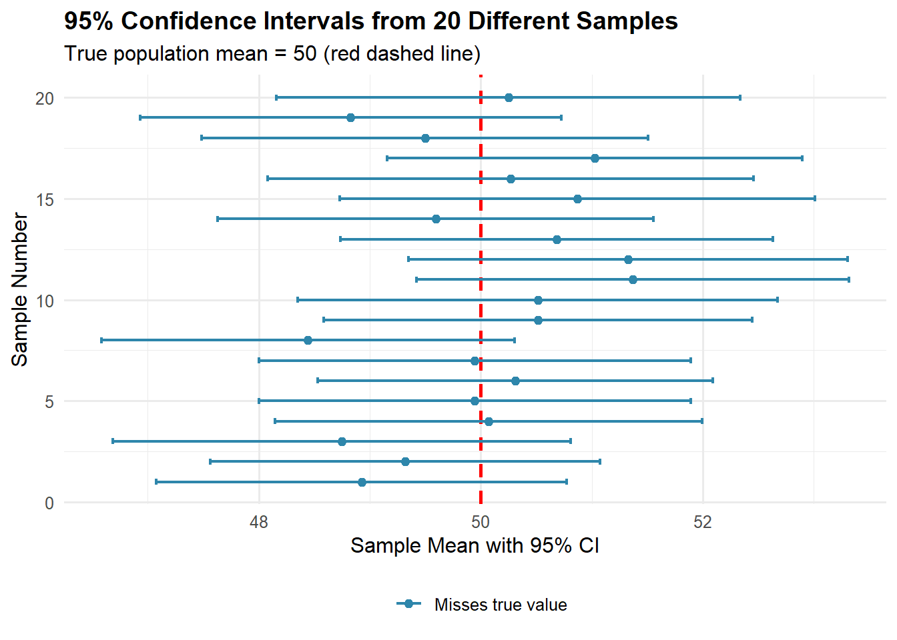
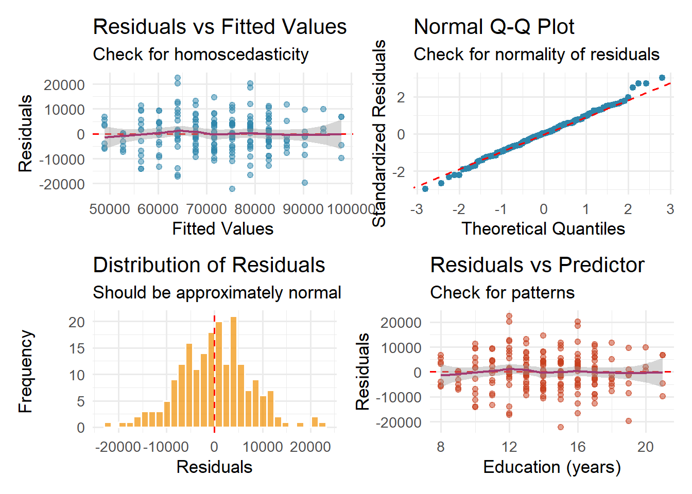

ggplot(heights, aes(x = height)) +
geom_histogram(binwidth = 5, boundary = 0, color = "white") +
labs(title = "Frequency histogram", x = "Height (cm)", y = "Frequency (count)")
Statistics is the science of learning from data under uncertainty.
Statistics is a way to learn about the world from data when results vary and are uncertain. It teaches how to collect data wisely, spot patterns, estimate population quantities, and make predictions—always stating how wrong we might be.
Demography is the scientific study of human populations, focusing on their size, structure, distribution, and changes over time. It’s essentially the statistical analysis of people - who they are, where they live, how many there are, and how these characteristics evolve.
Statistics and demography are interconnected disciplines that provide powerful tools for understanding populations, their characteristics, and the patterns that emerge from data. In an era where data drives decision-making from local community planning to global policy initiatives, understanding statistical principles is not just academic—it’s essential for informed citizenship and professional practice.
Consider a practical example: When news reports state that “unemployment has decreased by 2%,” what does this really mean? Is this change meaningful or could it be due to random variation? How was this measured? Who was included in the study? These questions illustrate why statistical literacy is crucial for interpreting the demographic information that shapes our world.
Statistics serves as the mathematical backbone of demographic analysis, enabling us to move beyond simple description to understanding complex population dynamics, making predictions, and informing policy decisions.
Main Rule: Unless otherwise specified, round the decimal parts of decimal numbers to at least 2 significant figures. In statistics, we often work with long decimal parts and very small numbers — don’t round excessively in intermediate steps, round at the end of calculations.
The decimal part consists of digits after the decimal point. In statistics, it’s particularly important to maintain appropriate precision:
Descriptive statistics:
Very small numbers (p-values, probabilities):
In the decimal part, significant figures are all digits except leading zeros:
⚠️ WARNING: Don’t round to zero!
In statistics, we often encounter very small numbers. Use scientific notation when it improves readability:
P-values and probabilities:
Very small standard deviations:
Large numbers (rare in basic statistics):
When in doubt: Better to keep an extra digit than to round too aggressively
Statistics is the science of collecting, organizing, analyzing, interpreting, and presenting data. It encompasses both the methods for working with data and the theoretical foundations that justify these methods. But statistics is more than just numbers and formulas—it’s a way of thinking about uncertainty and variation in the world around us.
Imagine you want to understand the average age at first marriage in your country. You cannot possibly ask every single person when they first married (if at all). Statistics provides the tools to:
The field of statistics can be broadly divided into two complementary branches:
Descriptive Statistics involves methods for summarizing and presenting data in meaningful ways. This includes:
Measures of Central Tendency - Where is the center of your data?
Measures of Variability - How spread out is your data?
Visual Representations
Inferential Statistics encompasses techniques for drawing conclusions about populations based on sample data. This branch allows us to move beyond what we observe to what we can reasonably conclude.


Consider a chef preparing soup for 100 people who needs to assess its flavor without consuming the entire batch:
Population: The entire pot of soup (100 servings)
Sample: A single spoonful for tasting
Population Parameter: The true average saltiness of the complete pot (unknown)
Sample Statistic: The saltiness level detected in the spoonful (observable)
Statistical Inference: Using the spoonful’s characteristics to draw conclusions about the entire pot
1. Random sampling is essential: The chef must thoroughly stir the soup before sampling. Consistently sampling from the surface might miss seasoning that has settled, introducing systematic bias.
2. Sample size affects precision: A larger spoonful provides more reliable information about overall flavor than a small sip, though practical constraints limit sample size.
3. Uncertainty is inherent: Even with proper sampling technique, the spoonful might not perfectly represent the entire pot’s characteristics.
4. Systematic bias undermines inference: If someone secretly adds salt only to the sampling area, conclusions about the whole pot become invalid—illustrating how sampling bias distorts statistical inference.
5. Inference has scope limitations: The sample can estimate average saltiness but cannot reveal whether some portions are saltier than others, highlighting the limits of what samples can tell us about population variability.
This analogy captures the essence of statistical reasoning: using carefully selected samples to learn about larger populations while explicitly acknowledging and quantifying the inherent uncertainty in this process.
For example, if a survey of 1,000 households finds that 23% include three generations living together, inferential statistics helps us:
Fundamental Principle: Statistics does not eliminate uncertainty—it helps us measure, manage, and communicate it effectively.
Research Question: What proportion of students support keeping the library open 24/7?
The Challenge:
Without Statistical Thinking: “60 out of 100 students said yes, therefore exactly 60% support it.”
With Statistical Thinking: “We estimate 60% support with a margin of error of ±10%. We can be reasonably confident the true support lies between 50% and 70%.”
The difference is acknowledging and quantifying uncertainty rather than pretending it doesn’t exist.
The Literary Digest conducted one of the largest polls in history with 2.4 million responses, predicting Alf Landon would defeat Franklin D. Roosevelt in the 1936 presidential election. Despite the massive sample size:
Prediction: Landon 57%, Roosevelt 43%
Actual Result: Roosevelt 62%, Landon 38%
Error: 25 percentage points!
What went wrong? The poll suffered from systematic bias:
Selection bias in sampling frame:
Non-response bias:
Key Lessons:
This disaster led to major improvements in polling methodology, including the development of probability sampling and response rate tracking.
Today’s polls, while much smaller than the Literary Digest’s 2.4 million responses, are far more accurate because they focus on:
Representative sampling: Using probability-based methods to ensure all groups have known chances of selection
Bias detection and correction: Monitoring response rates across demographics and adjusting for known biases
Uncertainty quantification: Reporting margins of error that honestly communicate the limits of what we know
Example: A modern poll of 1,000 randomly selected voters with a 3% margin of error is far more reliable than the Literary Digest’s massive but biased survey.
Data: Information collected during research – this includes survey responses, experimental results, economic indicators, social media content, or any other measurable observations.
Understanding data types and distributions is fundamental to choosing appropriate analyses and interpreting results correctly.
Observations for variables (columns in a database) collected at a single point in time across multiple entities/individuals:
| Individual | Age | Income | Education |
|---|---|---|---|
| 1 | 25 | 50000 | Bachelor’s |
| 2 | 35 | 75000 | Master’s |
| 3 | 45 | 90000 | PhD |
Observations of a single entity tracked over multiple time points:
| Year | GDP (in billions) | Unemployment Rate |
|---|---|---|
| 2018 | 20,580 | 3.9% |
| 2019 | 21,433 | 3.7% |
| 2020 | 20,933 | 8.1% |
Observations of multiple entities tracked over time:
| Country | Year | GDP per capita | Life Expectancy |
|---|---|---|---|
| USA | 2018 | 62,794 | 78.7 |
| USA | 2019 | 65,118 | 78.8 |
| Canada | 2018 | 46,194 | 81.9 |
| Canada | 2019 | 46,194 | 82.0 |
A special case of panel data where:
Each row represents an entity; columns represent variables/time points:
| Country | GDP_2018 | GDP_2019 | LE_2018 | LE_2019 |
|---|---|---|---|---|
| USA | 62,794 | 65,118 | 78.7 | 78.8 |
| Canada | 46,194 | 46,194 | 81.9 | 82.0 |
Each row represents a unique entity-time-variable combination:
| Country | Year | Variable | Value |
|---|---|---|---|
| USA | 2018 | GDP per capita | 62,794 |
| USA | 2019 | GDP per capita | 65,118 |
| USA | 2018 | Life Expectancy | 78.7 |
| USA | 2019 | Life Expectancy | 78.8 |
| Canada | 2018 | GDP per capita | 46,194 |
| Canada | 2019 | GDP per capita | 46,194 |
| Canada | 2018 | Life Expectancy | 81.9 |
| Canada | 2019 | Life Expectancy | 82.0 |
Note: Long format is generally preferred for:
Data consists of collected observations or measurements. The type of data determines what operations are meaningful and what statistical methods apply.
Continuous Data can take any value within a range:
Examples with Demographic Relevance:
Properties:
Discrete Data can only take specific values:
Examples:
Key Distinction: Discrete data comes from counting; continuous from measuring.
Nominal Data represents categories with no inherent order:
Examples:
What We Can Do:
What We Cannot Do:
Ordinal Data represents ordered categories:
Examples:
The Challenge: Intervals between categories aren’t necessarily equal. The “distance” from Poor to Fair health may not equal the distance from Good to Excellent.
A data distribution describes how values spread across possible outcomes (what values and how often a variable takes). Distributions tell us what values are common, what values are rare, and what patterns exist in our data.
Shape Characteristics:
Symmetry vs. Skewness:
Example of Skewness Impact:
Income distribution in the U.S.:
Modality:
Important Probability Distributions:
Normal (Gaussian) Distribution:
Demographic Applications:
Binomial Distribution:
Example: Number of male births out of 100 births (p \approx 0.512)
Poisson Distribution:
Demographic Applications:
A frequency distribution shows how often each value occurs in a dataset. It’s often the first step in understanding your data.
Absolute Frequency: The count of observations for each value.
Relative Frequency: The proportion in each category. \text{Relative Frequency} = \frac{\text{Count}}{\text{Total}}
Cumulative Frequency: Running total up to each value.
Detailed Example: Age distribution in a community health survey of 200 people:
| Age Group | Absolute Frequency | Relative Frequency | Cumulative Frequency | Cumulative % |
|---|---|---|---|---|
| 0-9 | 24 | 0.12 | 24 | 12% |
| 10-19 | 28 | 0.14 | 52 | 26% |
| 20-29 | 35 | 0.175 | 87 | 43.5% |
| 30-39 | 32 | 0.16 | 119 | 59.5% |
| 40-49 | 30 | 0.15 | 149 | 74.5% |
| 50-59 | 25 | 0.125 | 174 | 87% |
| 60-69 | 16 | 0.08 | 190 | 95% |
| 70+ | 10 | 0.05 | 200 | 100% |
What This Tells Us:
Histogram: For continuous data, shows frequency with bar heights.
Bar Chart: For categorical data, shows frequency with separated bars.
Cumulative Distribution Function (CDF): Shows proportion of values ≤ each point of data.
Box Plot (Box-and-Whisker Plot): A visual summary that displays the distribution’s key statistics using five key values.
The Five-Number Summary:
What It Reveals: - Skewness: If median line is off-center in the box, or whiskers are unequal - Spread: Wider boxes and longer whiskers indicate more variability - Outliers: Immediately visible as separate points - Symmetry: Equal whisker lengths and centered median suggest normal distribution
Quick Interpretation: - Narrow box = consistent data - Long whiskers = wide range of values
- Many outliers = potential data quality issues or interesting extreme cases - Median closer to Q1 = right-skewed data (tail extends right) - Median closer to Q3 = left-skewed data (tail extends left)
Box plots are especially useful for comparing multiple groups side-by-side!
Idea: A histogram divides the x-axis into bins.
- Frequency = how many observations fall in each bin (a count).
- Density rescales those counts so that the total area = 1. This makes areas ≈ probabilities.
For a bin of width h that contains count observations out of n total:
\textbf{density height in that bin} \;\approx\; \frac{\text{count}}{n \cdot h}
Discrete analogy:
If your data are discrete and you use unit-width bins (h = 1) centered on the discrete values, then
\text{density height} = \frac{\text{count}}{n \cdot 1} = \frac{\text{count}}{n} — i.e., density height = relative frequency.
For other bin widths, density is relative frequency per unit of x.
Continuous analogy:
For continuous variables, the probability of any exact value is 0. We talk about the probability of an interval. A histogram’s bar height is the probability per unit of x (so that height × width ≈ probability of that interval). That’s why densities carry units like “per cm” or “per kg”.
ggplot(heights, aes(x = height)) +
geom_histogram(binwidth = 5, boundary = 0, color = "white") +
labs(title = "Frequency histogram", x = "Height (cm)", y = "Frequency (count)")
ggplot(heights, aes(x = height)) +
geom_histogram(aes(y = after_stat(density)), binwidth = 5, boundary = 0, color = "white") +
geom_density(linewidth = 1) +
labs(title = "Density histogram (area = 1) + smooth density curve", x = "Height (cm)", y = "Density")
bw <- 5
brks <- seq(floor(min(heights$height)/bw)*bw, ceiling(max(heights$height)/bw)*bw, by = bw)
tab <- heights %>%
mutate(bin = cut(height, breaks = brks, right = FALSE, include.lowest = TRUE)) %>%
count(bin, name = "count") %>%
mutate(width = bw,
n_total = nrow(heights),
rel_freq = count / n_total,
density_height = rel_freq / width, # count / (n * h)
area = density_height * width) %>% # should equal rel_freq
arrange(bin)
head(tab, 5)# A tibble: 5 × 7
bin count width n_total rel_freq density_height area
<fct> <int> <dbl> <int> <dbl> <dbl> <dbl>
1 [135,140) 1 5 500 0.002 0.0004 0.002
2 [140,145) 2 5 500 0.004 0.0008 0.004
3 [145,150) 10 5 500 0.02 0.004 0.02
4 [150,155) 20 5 500 0.04 0.008 0.04
5 [155,160) 44 5 500 0.088 0.0176 0.088sum(tab$area) # ≈ 1 (up to rounding)[1] 1Understanding the distinction between populations and samples is crucial for proper statistical analysis. This distinction affects every aspect of our analysis, from planning data collection to interpreting results.
A population is the complete set of individuals, objects, or measurements about which we wish to draw conclusions. The key word here is “complete”—a population includes every single member of the group we’re studying.
Examples of Populations in Demography:
Populations can be:
Finite: Having a countable number of members (all current U.S. citizens, all Polish municipalities in 2024)
Infinite: Theoretical or uncountably large (all possible future births)
Fixed: Defined at a specific point in time (all residents on census day)
Dynamic: Changing over time (the population of a city that experiences births, deaths, and migration daily)
A sample is a subset of the population that is actually observed or measured. We study samples because examining entire populations is often impossible, impractical, or unnecessary.
Why We Use Samples:
Practical Impossibility: Imagine testing every person in China for a disease. By the time you finished testing 1.4 billion people, the disease situation would have changed completely, and some people tested early would need retesting.
Cost Considerations: The 2020 U.S. Census cost approximately $16 billion. Conducting such complete enumerations frequently would be prohibitively expensive. A well-designed sample survey can provide accurate estimates at a fraction of the cost.
Time Constraints: Policy makers often need information quickly. A sample survey of 10,000 people can be completed in weeks, while a census takes years to plan, execute, and process.
Destructive Measurement: Some measurements destroy what’s being measured. Testing the lifespan of light bulbs or the breaking point of materials requires using samples.
Greater Accuracy: Surprisingly, samples can sometimes be more accurate than complete enumerations. With a sample, you can afford better training for interviewers, more careful data collection, and more thorough quality checks.
Example of Sample vs. Population:
Let’s say we want to know the average household size in New York City:
A superpopulation is a theoretical infinite population from which your finite population is considered to be one random sample.
Think of it in three levels:
Why do we need this concept?
Consider the 50 US states. You might measure unemployment rate for all 50 states—a complete census, no sampling needed. But you still want to:
Without the superpopulation concept, you’re stuck—you have all the data, so what’s left to infer? The answer: treat this year’s 50 values as one draw from an infinite superpopulation of possible values that could occur under similar conditions.
Mathematical representation:
The Data Generating Process (DGP) is the actual mechanism that creates your data—including all factors, relationships, and random elements.
An intuitive example: Suppose student test scores are truly generated by:
\text{Score}_i = 50 + 2(\text{StudyHours}_i) + 3(\text{SleepHours}_i) - 5(\text{Stress}_i) + 1.5(\text{Breakfast}_i) + \epsilon_i
This is the TRUE DGP. But you don’t know this! You might estimate:
\text{Score}_i = \alpha + \beta(\text{StudyHours}_i) + u_i
Your model is simpler than reality. You’re missing variables (sleep, stress, breakfast), so your estimates might be biased. The u_i term captures everything you missed.
Key insight: We never know the true DGP. Our statistical models are always approximations, trying to capture the most important parts of the unknown, complex truth.
When analyzing data, especially from surveys or samples, we can take two philosophical approaches:
Which is better?
Suppose you collect education spending per pupil for all 50 US states.
Without superpopulation thinking:
With superpopulation thinking:
The key insight: Even with complete data, the superpopulation framework enables statistical inference by treating observed values as one possible outcome from an underlying stochastic process.
Superpopulation: Treats your finite population as one draw from an infinite possibility space—essential when your finite population is small or completely observed
DGP: The true (unknown) process creating your data—your models try to approximate it
Before diving deeper into populations and samples, we must understand the types of variables we work with and how we measure them.
A variable is any characteristic that can take different values across units of observation.
Political science has evolved from a primarily theoretical discipline to one that increasingly relies on empirical evidence. Whether we’re studying:
We need systematic ways to analyze data and draw conclusions that go beyond anecdotes and personal impressions.
Consider this question: “Does democracy lead to economic growth?”
Your intuition might suggest yes—democratic countries tend to be wealthier. But is this causation or correlation? Are there exceptions? How confident can we be in our conclusions?
Statistics provides the tools to move from hunches to evidence-based answers, helping us distinguish between what seems true and what actually is true.
Correlation measures how two variables move together: - Positive: Both increase together (study hours ↑, grades ↑) - Negative: One increases while other decreases (TV hours ↑, grades ↓) - Measured by correlation coefficient: r \in [-1, 1]
Causation means one variable directly influences another: - X \rightarrow Y: Changes in X directly cause changes in Y - Requires: (1) correlation, (2) temporal precedence, (3) no alternative explanations
A spurious correlation occurs when two variables appear related but are actually both influenced by a third variable (a confounder).
Classic Example: - Observed: Ice cream sales correlate with drowning deaths - Spurious conclusion: Ice cream causes drowning (❌) - Reality: Summer weather (confounder) causes both: - Summer → More ice cream sales - Summer → More swimming → More drownings
Mathematical representation: - Observed correlation: \text{Cor}(X,Y) \neq 0 - But the true model: X = \alpha Z + \epsilon_1 and Y = \beta Z + \epsilon_2 - Where Z is the confounding variable causing both
Finding correlation is easy. Establishing causation is hard. Always ask: “What else could explain this relationship?”
Remember: The most dangerous phrase in empirical research is “our data shows that X causes Y” when all you’ve measured is correlation.
For each scenario, identify whether the relationship is likely causal or spurious:
Quantitative Variables represent amounts or quantities and can be:
Continuous Variables: Can take any value within a range, limited only by measurement precision.
Discrete Variables: Can only take specific values, usually counts.
Qualitative Variables represent categories or qualities and can be:
Nominal Variables: Categories with no inherent order.
Ordinal Variables: Categories with a meaningful order but unequal intervals.
Understanding measurement scales is crucial because they determine which statistical methods are appropriate:
Nominal Scale: Categories only—we can count frequencies but cannot order or perform arithmetic. Example: We can say 45% of residents were born locally, but we cannot calculate an “average birthplace.”
Ordinal Scale: Order matters but differences between values are not necessarily equal. Example: The difference between “poor” and “fair” health may not equal the difference between “good” and “excellent” health.
Interval Scale: Equal intervals between values but no true zero point. Example: Temperature in Celsius—the difference between 20°C and 30°C equals the difference between 30°C and 40°C, but 0°C doesn’t mean “no temperature.”
Ratio Scale: Equal intervals with a true zero point, allowing all mathematical operations. Example: Income—$40,000 is twice as much as $20,000, and $0 means no income.
These concepts form the core of statistical inference—how we learn about populations from samples. Understanding the relationships between these terms is essential for proper statistical reasoning.
A parameter is a numerical characteristic of a population. Parameters are typically unknown because we cannot measure the entire population. They are fixed values (not random) but unknown to us. We denote parameters with Greek letters.
Common Demographic Parameters:
Example: The true mean age at first birth for all women in France who gave birth in 2023 is a parameter. Let’s call it \mu = 31.2 years. We don’t know this value without measuring every single birth.
A statistic is a numerical characteristic calculated from sample data. Statistics are random variables—their values vary from sample to sample. We use Roman letters for statistics.
Common Sample Statistics:
Example: From a sample of 500 births in France, we calculate a sample mean age at first birth of \bar{x} = 30.9 years. This is our statistic. A different sample might yield \bar{x} = 31.4 years.
Think of this relationship like trying to understand the depth of a lake:
An estimator is a rule or formula for calculating an estimate of a population parameter from sample data. An estimator is a function that maps sample data to parameter estimates. It’s the recipe, not the cake.
Properties of Good Estimators:
Unbiasedness: On average, the estimator equals the true parameter value. If we repeated sampling many times, the average of all our estimates would equal the true parameter.
Example: The sample mean \bar{x} is an unbiased estimator of population mean \mu. If we took 1,000 different samples and calculated 1,000 sample means, their average would be very close to \mu.
Consistency: As sample size increases, the estimator converges to the true parameter value.
Example: With n=10, our estimate of average income might be off by $5,000. With n=1,000, we might be off by only $500. With n=100,000, we might be off by only $50.
Efficiency: Among unbiased estimators, the one with the smallest variance. The sample mean is more efficient than the sample median for estimating the population mean of a normal distribution.
Common Estimators:
Note: We divide by (n-1) not n for sample variance to make it unbiased—this is called Bessel’s correction.
The estimand is the specific population parameter we aim to estimate. It’s the target of our estimation procedure. Clear specification of the estimand is crucial for proper statistical inference and avoiding misinterpretation.
Examples of Clearly Defined Estimands:
Why Precise Estimand Definition Matters:
Consider studying “unemployment rate.” The estimand must specify:
Different definitions lead to different numbers. The U.S. Bureau of Labor Statistics publishes six different unemployment rates (U-1 through U-6) based on different definitions.
An estimate is the specific numerical value calculated by applying an estimator to observed data. It’s our best guess at the true parameter value based on available information.
Example of the Complete Process:
An estimand is the specific quantity we aim to estimate—what we’re targeting with our statistical analysis. While this is often a population parameter, estimands can be more complex.
Examples of different estimands:
Simple parameter estimand: The population mean income (\mu)
Comparative estimand: The difference in mean income between two groups (\mu_1 - \mu_2)
Causal estimand: The average treatment effect of a job training program on earnings
Conditional estimand: Expected voter turnout given specific weather conditions
Understanding statistical inference requires distinguishing between these related but distinct concepts:
Example in context:
This framework helps clarify exactly what question we’re answering and ensures our methods align with our research goals.
No measurement or estimate is perfect. Understanding different types of error is crucial for interpreting results and improving study design.
Polls use samples of people rather than surveying the entire population, so results naturally vary. A result like “Candidate A: 52%, Candidate B: 48%” is incomplete without expressing the uncertainty inherent in sampling.
With approximately 1,000 randomly selected respondents, the 95% margin of sampling error is roughly ±3 percentage points in the worst-case scenario. When a poll reports “52%,” the true population support likely falls between 49% and 55% — assuming no other sources of error.
Consider repeating the same poll 100 times with different random samples of 1,000 people. Each time, you calculate the ±3% range around your result. Approximately 95 of those 100 ranges would contain the true population value.
The remaining 5 times represent sampling variation—occasions when the random sample happens to differ substantially from the population.
The confidence level represents a trade-off between precision and reliability:
Higher confidence requires wider intervals, reducing precision.
The difference between candidates carries more uncertainty than individual percentages. With n≈1,000, a 4-percentage-point lead may be within the margin of sampling error when accounting for random sampling variation.
For a sample proportion \hat{p} from n respondents, the margin of sampling error is:
\text{Margin of sampling error (95\%)} \approx 1.96 \times \sqrt{\frac{\hat{p}(1-\hat{p})}{n}}
The value 1.96 represents a mathematical constant that ensures 95% coverage. Here is the conceptual explanation:
When drawing many samples from a population, the sample results form a predictable pattern around the true value. To capture the middle 95% of all possible sample results, statisticians have determined that the interval must extend 1.96 times the typical variation in each direction from the sample result.
This multiplier ensures that if you repeated the polling process many times, approximately 95% of your calculated intervals would contain the true population parameter.
The margin of sampling error reaches its maximum when \hat{p} = 0.5 (a 50-50 split):
\text{Margin of sampling error} \approx 1.96 \times \sqrt{\frac{0.5 \times 0.5}{n}} = \frac{0.98}{\sqrt{n}}
With n = 1,000: \frac{0.98}{\sqrt{1000}} \approx 0.031 = 3.1\%
Quality polls should report:
Primary rule: Differences smaller than the margin of sampling error may represent random sampling variation rather than meaningful differences.
Critical limitation: The margin of sampling error addresses only random variation from sampling. It does not account for systematic errors, which are often larger and more consequential:
These systematic errors can cause polls to miss the true value by much more than ±3%, yet they are invisible in the reported margin of sampling error.
Rule of thumb: Don’t over-interpret differences smaller than the margin of error—they might just be noise.
Random error is the unpredictable variability that occurs in any sample-based study. The larger the sample, the smaller the random error. This is what the margin of error accounts for.
Systematic error (bias) is a consistent shift in results in one direction. It can result from:
Key difference: A larger sample reduces random error but does not eliminate systematic error. A poll of 10,000 people with systematic bias can be less accurate than a poll of 1,000 people without such bias.
Key idea: A large biased sample gives a precisely wrong answer. Increase n to reduce random error; improve design/measurement to reduce bias.
For an estimator \hat\theta:
\mathrm{MSE}(\hat\theta) \;=\; \underbrace{\mathrm{Var}(\hat\theta)}_{\text{random error}} \;+\; \underbrace{\big(\mathrm{Bias}(\hat\theta)\big)^2}_{\text{systematic error}}.

Random error (also called sampling error) arises from natural variability in sampling. It’s the error that occurs because we observe a sample rather than the entire population.
Characteristics of Random Error:
Example of Random Error:
Imagine estimating the proportion of households with internet access by surveying 100 random households:
The variation around 70% is random error. With larger samples (say 1,000 households), estimates would cluster more tightly around 70%.
Quantifying Random Error:
For a proportion, the standard error (which measures random error) is: SE = \sqrt{\frac{p(1-p)}{n}}
If true proportion p = 0.7 and n = 100: SE = \sqrt{\frac{0.7 \times 0.3}{100}} = 0.046
This means our estimate typically varies by about \pm 4.6 percentage points due to random error alone.
Systematic error (also called bias) represents consistent deviation from true values in a particular direction. Unlike random error, it doesn’t average out with repeated sampling.
Sources of Systematic Error:
Selection Bias: When the sampling method systematically excludes certain groups.
Example: A telephone survey about employment conducted only during business hours will underrepresent employed people, biasing unemployment estimates upward.
Measurement Bias: When the measurement instrument consistently over- or under-measures.
Example: Asking “How old were you at your first marriage?” may yield different results than “In what year were you first married?” due to recall differences.
Response Bias: When respondents systematically misreport.
Example: People tend to underreport alcohol consumption and overreport voting behavior. Income is often underreported at high levels and overreported at low levels.
Non-response Bias: When those who don’t respond differ systematically from those who do.
Example: In health surveys, very sick and very healthy people are less likely to respond, biasing health estimates toward the middle.
Survivorship Bias: When we only observe “survivors” of some process.
Example: Studying factors associated with longevity by interviewing 90-year-olds misses those with the same factors who died younger.
Example Comparing Random and Systematic Error:
A scale that always reads 2 pounds heavy has systematic error. If you weigh yourself 100 times:
Dealing with Different Types of Error:
Sampling is the process of selecting a subset of individuals from a population to estimate characteristics of the whole population. The way we sample profoundly affects what we can conclude from our data.
Before discussing methods, we must understand the sampling frame—the list or device from which we draw our sample. The frame should ideally include every population member exactly once.
Common Sampling Frames:
Frame Problems:
Probability sampling gives every population member a known, non-zero probability of selection. This allows us to make statistical inferences about the population.
Every possible sample of size n has equal probability of selection. It’s the gold standard for statistical theory but often impractical for large populations.
How It Works:
Example: To sample 50 students from a school of 1,000:
Advantages:
Disadvantages:
Select every kth element from an ordered sampling frame, where k = N/n (the sampling interval).
How It Works:
Example: To sample 100 houses from 5,000 on a street listing:
Advantages:
Disadvantages:
Hidden Periodicity Example: Sampling every 10th apartment in buildings where corner apartments (numbers ending in 0) are all larger. This would bias our estimate of average apartment size.
Divide population into homogeneous subgroups (strata) before sampling. Sample independently within each stratum.
How It Works:
Example: Studying income in a city with distinct neighborhoods:
Types of Allocation:
Proportional: Sample size in each stratum proportional to stratum size
Optimal (Neyman): Larger samples from more variable strata
Equal: Same sample size per stratum regardless of population size
Advantages:
Disadvantages:
Select groups (clusters) rather than individuals. Often used when population is naturally grouped or when creating a complete frame is difficult.
Single-Stage Cluster Sampling:
Two-Stage Cluster Sampling:
Example: Surveying rural households in a large country:
Multi-Stage Example: National health survey:
Advantages:
Disadvantages:
Design Effect: Cluster sampling typically requires larger samples than SRS. The design effect (DEFF) quantifies this:
\text{DEFF} = \frac{\text{Variance(cluster sample)}}{\text{Variance(SRS)}}
If DEFF = 2, you need twice the sample size to achieve the same precision as SRS.
Non-probability sampling doesn’t guarantee known selection probabilities. While limiting statistical inference, these methods may be necessary or useful in certain situations.
Selection based purely on ease of access. No attempt at representation.
Examples:
When It Might Be Acceptable:
Major Problems:
Real Example: Literary Digest’s 1936 U.S. presidential poll surveyed 2.4 million people (huge sample!) but used telephone directories and club memberships as frames during the Depression, dramatically overrepresenting wealthy voters and incorrectly predicting Landon would defeat Roosevelt.
Deliberate selection of specific cases based on researcher judgment about what’s “typical” or “interesting.”
Examples:
Types of Purposive Sampling:
Typical Case: Choose average or normal examples
Extreme/Deviant Case: Choose unusual examples
Maximum Variation: Deliberately pick diverse cases
Critical Case: Choose cases that will be definitive
When It’s Useful:
Problems:
Selection to match population proportions on key characteristics. Like stratified sampling but without random selection within groups.
How Quota Sampling Works:
Detailed Example: Political poll with quotas:
Population proportions:
For a sample of 1,000:
Interviewers might stand on street corners approaching people who appear to fit needed categories until quotas are filled.
Why It’s Popular in Market Research:
Why It’s Problematic for Statistical Inference:
Hidden Selection Bias: Interviewers approach people who look approachable, speak the language well, aren’t in a hurry—systematically excluding certain types within each quota cell.
Example of Bias: An interviewer filling a quota for “women 18-34” might approach women at a shopping mall on Tuesday afternoon, systematically missing:
Even though the final sample has the “right” proportion of young women, they’re not representative of all young women.
No Measure of Sampling Error: Without selection probabilities, we can’t calculate standard errors or confidence intervals.
Historical Cautionary Tale: Quota sampling was standard in polling until the 1948 U.S. presidential election, when polls using quota sampling incorrectly predicted Dewey would defeat Truman. The failure led to adoption of probability sampling in polling.
Participants recruit additional subjects from their acquaintances. The sample grows like a rolling snowball.
How It Works:
Example: Studying undocumented immigrants:
When It’s Valuable:
Hidden Populations: Groups without sampling frames
Socially Connected Populations: When relationships matter
Trust-Dependent Research: When referrals increase participation
Major Limitations:
Advanced Version - Respondent-Driven Sampling (RDS):
Attempts to make snowball sampling more rigorous by:
Still controversial whether RDS truly allows valid inference.
When we make estimates from samples, we need to quantify how uncertain those estimates are. These measures are fundamental to honest reporting of results.
Point estimate: The single value calculated from sample data (e.g., \hat{p} = 0.60)
Standard error (SE): Typical variability in the estimate across repeated samples
Margin of error: Range added around point estimate to account for sampling uncertainty
Confidence interval: Point estimate ± margin of error (e.g., 60% ± 3%)
When 60 out of 100 surveyed students support a proposal, \hat{p} = 0.60 is your point estimate—the best single approximation of the population parameter from your sample.
Sample size directly controls estimate precision. For binary outcomes near 50% with simple random sampling:
| Sample Size | Margin of Error (95%) | Interpretation |
|---|---|---|
| n = 100 | ± 10% | Broad direction only |
| n = 400 | ± 5% | General trends |
| n = 1,000 | ± 3% | Actionable precision |
| n = 2,500 | ± 2% | High precision |
| n = 10,000 | ± 1% | Very high precision |
Key insight: To halve the margin of error, you need four times the sample size (law of diminishing returns).
Mathematical basis: Since \text{MoE} \propto \frac{1}{\sqrt{n}}, precision improvements require quadratic increases in sample size.
Margin of error relationship: \text{MoE} \approx 2 \times \text{SE} (for 95% confidence)
Standard errors: - Proportion: \text{SE}(\hat{p}) = \sqrt{\frac{\hat{p}(1-\hat{p})}{n}} - Mean: \text{SE}(\bar{x}) = \frac{s}{\sqrt{n}}
Rule of thumb: For proportions near 50%, \text{MoE} \approx \frac{1}{\sqrt{n}}
For 95% confidence intervals, we multiply the standard error by 1.96. This value ensures that if you repeated the process many times, approximately 95% of your calculated intervals would contain the true population parameter.
Margin of error quantifies uncertainty from studying a sample rather than the entire population. Standard error measures typical sampling variability. 95% confidence intervals use methods that capture the true parameter 95% of the time across repeated applications.
Key insight: These measures help distinguish meaningful differences from sampling noise, but remember they address only one source of uncertainty—random sampling variation.
library(ggplot2)
set.seed(42)
# Parameters
n_polls <- 20
n_people <- 100
true_support <- 0.50
# Simulate independent polls (binomial counts -> proportions)
support <- rbinom(n_polls, n_people, true_support) / n_people
# Per-poll standard error for a proportion (plug-in using that poll's estimate)
se <- sqrt(support * (1 - support) / n_people)
# "95%" margin of error ≈ 2 × SE (plain-English multiplier, no distribution jargon)
moe <- 2 * se
# Clamp intervals to [0, 1] to avoid plotting outside the parameter space
lower <- pmax(0, support - moe)
upper <- pmin(1, support + moe)
# Does the interval cover the true value?
covers <- (lower <= true_support) & (upper >= true_support)
n_cover <- sum(covers)
n_miss <- n_polls - n_cover
results <- data.frame(
poll = seq_len(n_polls),
support, se, moe, lower, upper, covers
)
# Plot
ggplot(results, aes(x = poll, y = support, color = covers)) +
geom_errorbar(aes(ymin = lower, ymax = upper), width = 0.3, alpha = 0.8) +
geom_point(size = 3) +
geom_hline(yintercept = true_support, linetype = "dashed") +
scale_color_manual(
values = c("TRUE" = "forestgreen", "FALSE" = "darkorange"),
labels = c("TRUE" = "Covers truth", "FALSE" = "Misses truth"),
name = NULL
) +
coord_cartesian(ylim = c(0, 1)) +
labs(
title = "Sampling Variability in 20 Independent Polls",
subtitle = paste0(
"Each poll surveys ", n_people, " different people. Truth = ",
scales::percent(true_support),
". Intervals covering truth: ", n_cover, "/", n_polls,
" (", round(100 * n_cover / n_polls), "%)."
),
x = "Poll Number",
y = "Estimated Proportion"
) +
theme_minimal(base_size = 13) +
theme(legend.position = "top")
Key observation: Each sample yields a different result, but most estimates—and their intervals—cluster around the true value; a few “miss” purely due to the randomness of sampling.
The standard error (SE) quantifies the variability of a statistic across different possible samples. Think of it as measuring how much our estimate would bounce around if we repeated our study many times.
Understanding Standard Error Through Simulation:
Imagine we want to estimate average height in a population where \mu = 170 cm and \sigma = 10 cm.
If we took 1,000 different samples of n = 100 people:
The standard deviation of these 1,000 sample means would be approximately 1 cm. This is the standard error.
Formulas for Common Standard Errors:
For a mean: SE(\bar{x}) = \frac{\sigma}{\sqrt{n}}
For a proportion: SE(\hat{p}) = \sqrt{\frac{p(1-p)}{n}}
For difference between two means: SE(\bar{x}_1 - \bar{x}_2) = \sqrt{\frac{\sigma_1^2}{n_1} + \frac{\sigma_2^2}{n_2}}
Important Properties:
Standard Error vs. Standard Deviation:
Students often confuse these:
Example with exam scores:
The margin of error represents the maximum expected difference between a sample estimate and the true population parameter at a specified confidence level. It’s what you see reported in polls: “Support is 52% with a margin of error of ±3%.”
Calculating Margin of Error:
\text{MOE} = \text{Critical Value} \times \text{Standard Error}
For 95% confidence with normal approximation: \text{MOE} = 1.96 \times SE
For 99% confidence: \text{MOE} = 2.576 \times SE
Example with Political Polling:
Survey of 1,000 voters finds 52% support a candidate.
What Margin of Error Does and Doesn’t Tell Us:
Does Tell Us:
Doesn’t Tell Us:
A biased sample with small margin of error is precisely wrong!
Factors Affecting Margin of Error:
Common Misinterpretations:
A confidence interval provides a range of plausible values for a population parameter. It’s more informative than a point estimate alone.
Construction:
\text{CI} = \text{Estimate} \pm (\text{Critical Value} \times \text{Standard Error})
For 95% CI of a mean: \text{CI} = \bar{x} \pm 1.96 \times \frac{\sigma}{\sqrt{n}}
Detailed Example:
Estimating average household size from a sample:
Interpretation: The 95% confidence interval for the mean household size is [2.31, 2.55]. If we repeatedly drew similar random samples and built intervals the same way, about 95% of those intervals would contain the true population mean. This specific interval is one such interval.
With 95% confidence, we estimate the population mean household size to lie between 2.31 and 2.55 (assuming random sampling and no systematic bias).
What Confidence Level Means:
The 95% confidence level means that if we repeated our sampling procedure 100 times:
Common Confidence Levels:
Factors Affecting CI Width:
Confidence Intervals for Different Parameters:
Proportion: \hat{p} \pm z\sqrt{\frac{\hat{p}(1-\hat{p})}{n}}
Example: 230 out of 1,000 adults smoke
Difference Between Proportions: (\hat{p}_1 - \hat{p}_2) \pm z\sqrt{\frac{\hat{p}_1(1-\hat{p}_1)}{n_1} + \frac{\hat{p}_2(1-\hat{p}_2)}{n_2}}
While this is primarily a statistics course, understanding basic probability is essential for statistical inference.
Probability quantifies uncertainty on a scale from 0 (impossible) to 1 (certain).
Classical Probability: P(\text{event}) = \frac{\text{Number of favorable outcomes}}{\text{Total possible outcomes}}
Example: Probability a randomly selected person is female \approx 0.5
Empirical Probability: Based on observed frequencies
Example: In a village, 423 of 1,000 residents are female, so P(\text{female}) \approx 0.423
Conditional Probability is the probability of event A given that event B has occurred: P(A|B)
Demographic Example: Probability of dying within a year given current age:
These conditional probabilities form the basis of life tables.
Events A and B are independent if P(A|B) = P(A).
Testing Independence in Demographic Data:
Are education and fertility independent?
As sample size increases, sample statistics converge to population parameters.
Demonstration: Estimating sex ratio at birth:
Let’s see this in action with coin flips. A fair coin has a 50% chance of landing heads, but individual flips are unpredictable.
# Simulate coin flips and show convergence
set.seed(42)
n_flips <- 1000
flips <- rbinom(n_flips, 1, 0.5) # 1 = heads, 0 = tails
# Calculate cumulative proportion of heads
cumulative_prop <- cumsum(flips) / seq_along(flips)
# Create data frame for plotting
lln_data <- data.frame(
flip_number = 1:n_flips,
cumulative_proportion = cumulative_prop
)
# Plot the convergence
ggplot(lln_data, aes(x = flip_number, y = cumulative_proportion)) +
geom_line(color = "steelblue", alpha = 0.7) +
geom_hline(yintercept = 0.5, color = "red", linetype = "dashed", size = 1) +
geom_hline(yintercept = c(0.45, 0.55), color = "red", linetype = "dotted", alpha = 0.7) +
labs(
title = "Law of Large Numbers: Coin Flip Proportions Converge to 0.5",
x = "Number of coin flips",
y = "Cumulative proportion of heads",
caption = "Red dashed line = true probability (0.5)\nDotted lines = ±5% range"
) +
scale_y_continuous(limits = c(0.3, 0.7), breaks = seq(0.3, 0.7, 0.1)) +
theme_minimal()
What this shows:
Let A denote an event of interest (e.g., “heads on a coin flip”, “vote for party X”, “sum of dice equals 7”). If P(A) = p and we observe n independent trials with the same distribution (i.i.d.), then the sample frequency of A:
\hat{p}_n = \frac{\text{number of occurrences of } A}{n}
converges to p as n increases.
Dice example: The event “sum = 7” with two dice has probability 6/36 ≈ 16.7\%, while “sum = 4” has 3/36 ≈ 8.3\%. Over many throws, a sum of 7 appears about twice as often as a sum of 4.
Election polling: If population support for a party equals p, then under random sampling of size n, the observed frequency \hat{p}_n will approach p as n grows (assuming random sampling and independence).
Quality control: If 2% of products are defective, then in large batches, approximately 2% will be found defective (assuming independent production).
Bottom line: Randomness underpins statistical inference by turning uncertainty in individual outcomes into predictable distributions for estimates. The Law of Large Numbers guarantees that the “noise” of individual outcomes averages out, allowing us to:
This principle works in surveys, experiments, and even quantum phenomena (in the frequentist interpretation).
In statistics, randomness is an orderly way to describe uncertainty: individual outcomes are unpredictable, yet in long sequences of repetitions stable regularities emerge (e.g., frequencies, means).
Two perspectives
Epistemic vs. ontological randomness
Epistemic (due to incomplete knowledge): we treat an outcome as random because not all determinants are observed or conditions are not controlled.
Examples:
Ontological (intrinsic indeterminacy): even complete knowledge does not remove outcome uncertainty.
Examples:
Random sampling
Random assignment (experiments)
Suppose we take a random sample of n=1000 voters and observe \hat p = 0.55 (i.e., 55% support). Then:
Our best single-number estimate of the population share is \hat p = 0.55.
A typical “95\% range of plausible values” around \hat p can be approximated by \hat p \;\pm\; 2\sqrt{\frac{\hat p(1-\hat p)}{n}} \;=\; 0.55 \;\pm\; 2\sqrt{\frac{0.55\cdot 0.45}{1000}} \approx 0.55 \pm 0.031, i.e., roughly 52\%\text{–}58\% (about \pm 3.1 percentage points).
The width of this range shrinks predictably with sample size: \text{width} \;\propto\; \frac{1}{\sqrt{n}}. For example, increasing n from 1000 to 4000 cuts the range by about half.
Not all uncertainty is the same. Understanding different sources of unpredictability helps us choose appropriate statistical methods and interpret results correctly.
| Concept | What is it? | Source of unpredictability | Example |
|---|---|---|---|
| Randomness | Individual outcomes are uncertain, but the probability distribution is known or modeled. | Fluctuations across realizations; lack of information about a specific outcome. | Dice roll, coin toss, polling sample |
| Chaos | Deterministic dynamics highly sensitive to initial conditions (butterfly effect). | Tiny initial differences grow rapidly → large trajectory divergences. | Weather forecasting, double pendulum, population dynamics |
| Entropy | A measure of uncertainty/dispersion (information-theoretic or thermodynamic). | Larger when outcomes are more evenly distributed (less predictive information). | Shannon entropy in data compression |
| “Haphazardness” (colloquial) | A felt lack of order without an explicit model; a mixture of mechanisms. | No structured description or stable rules; overlapping processes. | Traffic patterns, social media trends |
| Quantum randomness | A single outcome is not determined; only the distribution is specified (Born rule). | Fundamental (ontological) indeterminacy of individual measurements. | Electron spin measurement, photon polarization |
Deterministic chaos ≠ statistical randomness: A chaotic system is fully deterministic yet practically unpredictable due to extreme sensitivity to initial conditions. Statistical randomness, by contrast, models uncertainty via probability distributions where individual outcomes are genuinely uncertain.
Why this matters: In statistics, we typically model phenomena as random processes, assuming we can specify probability distributions even when individual outcomes are unpredictable. This assumption underlies most statistical inference.
In the Copenhagen interpretation, randomness is fundamental (ontological): a single outcome cannot be predicted, but the probability distribution is given by the Born rule.
This represents true randomness at the most basic level of nature, not just our ignorance of determining factors.
The distribution of sample means approaches normal distribution as sample size increases, regardless of the population distribution.
Why This Matters: Even if income is highly skewed, the average income from samples of 100+ people follows approximately normal distribution, allowing us to use normal-based confidence intervals.
Imagine you flip a coin 10 times and get 8 heads. Is the coin biased, or did you just get lucky? This is the core question statistical significance helps us answer.
Statistical significance tells us whether patterns in our data likely reflect something real or could have happened by pure chance.
Statistical hypothesis testing works like a criminal trial:
Crucial distinction: “Not guilty” ≠ “Innocent”
In statistics, we always start by assuming nothing special is happening:
Key principle: We maintain the null hypothesis (innocence) unless our data provides strong evidence against it—“beyond a reasonable doubt” in legal terms, or “p < 0.05” in statistical terms.
The p-value answers one specific question:
“If nothing special were happening (null hypothesis is true), how surprising would our results be?”
You flip a coin 10 times and get 8 heads. What’s the p-value?
The calculation: If the coin were fair, the probability of getting 8 or more heads is: p = P(≥8 \text{ heads in 10 flips}) \approx 0.055 \approx 5.5\%
P(X \geq 8) = \sum_{k=8}^{10} \binom{10}{k} 0,5^{10} = \frac{56}{1024} \approx 0,0547
Interpretation: There’s a 5.5% chance of getting results this extreme with a fair coin. That’s somewhat unusual but not shocking.
A p-value is the probability of getting results at least as extreme as what you observed, assuming the null hypothesis is true.
Common Mistake: The p-value is NOT the probability that the null hypothesis is true! It assumes the null is true and tells you how unusual your data would be in that world.
Imagine this courtroom scenario:
Prosecutor: “If the defendant were innocent, there’s only a 1% chance we’d find his DNA at the crime scene. We found his DNA. Therefore, there’s a 99% chance he’s guilty!”
This is WRONG! The prosecutor confused: - P(Evidence | Innocent) = 0.01 ← What we know - P(Innocent | Evidence) = ? ← What we want to know (but can’t get from the p-value alone!)
When we get p = 0.01, it’s tempting to think:
❌ WRONG: “There’s only a 1% chance the null hypothesis is true” ❌ WRONG: “There’s a 99% chance our treatment works”
✅ CORRECT: “If the null hypothesis were true, there’s only a 1% chance we’d see data this extreme”
Suppose you’re testing 1000 potential cancer drugs, and in reality, only 10 actually work.
If your drug shows a significant result, the probability it actually works is only 8/58 ≈ 14%, not 95%!
Remember: A p-value tells you P(Data | Null is true), not P(Null is true | Data). These are as different as P(Wet ground | Rain) and P(Rain | Wet ground)—the ground could be wet from a sprinkler!
One of the most powerful tools in statistical analysis is regression analysis—a method for understanding and quantifying relationships between variables. While the mathematics can become complex, the core idea is beautifully simple: How does one thing relate to another, and can we use that relationship to make predictions?
The One-Sentence Summary: Regression helps us understand how things relate to each other in a messy, complicated world where everything affects everything else.
Imagine you’re curious about the relationship between education and income. You notice that people with more education tend to earn more money, but you want to understand this relationship more precisely:
Regression analysis provides systematic answers to these questions. It’s like finding the “best-fitting story” that describes how variables relate to each other.
The One-Sentence Summary: Regression helps us understand how things relate to each other in a messy, complicated world where everything affects everything else.
Consider a typical pre-election news headline: “Candidate Smith’s approval rating reaches 68%.” Your immediate inference likely suggests favorable electoral prospects for Smith—not guaranteed victory, but a strong position.
This intuitive assessment exemplifies the essence of regression analysis. You utilized one piece of information (approval rating) to predict another outcome (electoral success), automatically recognizing that higher approval ratings correlate with better electoral performance, despite an imperfect relationship.
Regression analysis systematizes this intuitive process, enabling researchers to:
A variable is any characteristic that can take different values across units of observation. In political science:
💡 In Plain English: A variable is anything that changes. If everyone voted the same way, “voting preference” wouldn’t be a variable—it would be a constant. We study variables because we want to understand why things differ.
Regression analysis constitutes the foundational statistical tool in political science. It models relationships between variables and operationalizes our fundamental statistical model.
A model represents an object, person, or system in an informative way. Models divide into physical representations (such as architectural models) and abstract representations (such as mathematical equations describing atmospheric dynamics).
The core of statistical thinking can be expressed as:
Y = f(X) + \text{error}
This equation states that our outcome (Y) equals some function of our predictors (X), plus unpredictable variation.
Components:
💡 What This Really Means: Think of it like a recipe. Your grade in a class (Y) depends on study hours (X), but not perfectly. Two students studying 10 hours might get different grades because of test anxiety, prior knowledge, or just luck (the error term). Regression finds the average relationship.
This model provides the foundation for all statistical analysis—from simple correlations to complex machine learning algorithms.
Regression helps answer fundamental questions such as:
Let’s start with the simplest case: the relationship between two variables. Suppose we plot education (years of schooling) on the x-axis and annual income on the y-axis for 100 people. We’d see a cloud of points, and regression finds the straight line that best represents the pattern in these points.
What makes a line “best”? The regression line minimizes the total squared vertical distances from all points to the line. Think of it as finding the line that makes the smallest total prediction error.
The equation of this line is: Y = a + bX + \text{error}
Or in our example: \text{Income} = a + b \times \text{Education} + \text{error}
Where:
Interpreting the Results:
If our analysis finds: \text{Income} = 15,000 + 4,000 \times \text{Education}
This tells us:
A crucial distinction: regression shows association, not necessarily causation. Our education-income regression shows they’re related, but doesn’t prove education causes higher income. Other explanations are possible:
Example of Spurious Correlation: A regression might show that ice cream sales strongly predict drowning deaths. Does ice cream cause drowning? No! Both increase in summer (the common cause).
Real life is complicated—many factors influence outcomes simultaneously. Multiple regression lets us examine one relationship while “controlling for” or “holding constant” other variables.
Returning to education and income, we might wonder: Is the education effect just because educated people tend to be younger, from wealthier families, or live in cities? Multiple regression can separate these effects:
\text{Income} = a + b_1 \times \text{Education} + b_2 \times \text{Age} + b_3 \times \text{Urban} + b_4 \times \text{Parent Income} + \text{error}
Now b_1 represents the education effect after accounting for age, location, and family background. If b_1 = 3,000, it means: “Comparing people of the same age, location, and family background, each additional year of education is associated with $3,000 more income.”
Real Demographic Example: Fertility and Women’s Education
Researchers studying fertility might find: \text{Children} = 4.5 - 0.3 \times \text{Education}
This suggests each year of women’s education is associated with 0.3 fewer children. But is education the cause, or are educated women different in other ways? Adding controls:
\text{Children} = a - 0.15 \times \text{Education} - 0.2 \times \text{Urban} + 0.1 \times \text{Husband Education} - 0.4 \times \text{Contraceptive Access}
Now we see education’s association is weaker (-0.15 instead of -0.3) after accounting for urban residence and contraceptive access. This suggests part of education’s apparent effect operates through these other pathways.
This is what we’re trying to understand or predict:
These are factors we think might influence the outcome:
Handling Categorical Variables: We can’t directly put “religion” into an equation. Instead, we create binary variables:
The basic regression idea adapts to many situations:
For continuous outcomes (income, height, blood pressure): Y = a + b_1X_1 + b_2X_2 + … + \text{error}
For binary outcomes (died/survived, migrated/stayed, married/unmarried):
Instead of predicting the outcome directly, we predict the probability: \log\left(\frac{p}{1-p}\right) = a + b_1X_1 + b_2X_2 + …
Where p is the probability of the event occurring.
Example: Predicting migration probability based on age, education, and marital status. The model might find young, educated, unmarried people have 40% probability of migrating, while older, less educated, married people have only 5% probability.
For count outcomes (number of children, number of doctor visits): \log(\text{expected count}) = a + b_1X_1 + b_2X_2 + …
Example: Modeling number of children based on women’s characteristics. Useful because it ensures predictions are never negative (can’t have -0.5 children!).
What it’s for: Predicting when something will happen, not just if it will happen.
The challenge: Imagine you’re studying how long marriages last. You follow 1,000 couples for 10 years, but by the end of your study:
Regular regression can’t handle this “incomplete story” problem—those 600 ongoing marriages contain valuable information, but we don’t know their endpoints yet.
How Cox models help: Instead of trying to predict the exact timing, they focus on relative risk—who’s more likely to experience the event sooner. Think of it like asking “At any given moment, who’s at higher risk?” rather than “Exactly when will this happen?”
Real-world applications:
The coefficient tells us the expected change in outcome for a one-unit increase in the predictor, holding other variables constant.
Examples of Interpretation:
Linear regression for income:
Logistic regression for infant mortality:
Multiple regression for life expectancy:
The regression also tests whether relationships could be due to chance:
But remember: Statistical significance ≠ practical importance. With large samples, tiny effects become “significant.”
Just as we have confidence intervals for means, we have them for regression coefficients:
“The effect of education on income is $3,500 per year, 95% CI: [$2,800, $4,200]”
This means we’re 95% confident the true effect is between $2,800 and $4,200.
R^2 (R-squared) measures the proportion of variation in the outcome explained by the predictors:
Example: A model of income with only education might have R^2 = 0.15 (education explains 15% of income variation). Adding age, experience, and location might increase R^2 to 0.35 (together they explain 35%).
Regression makes assumptions that may not hold:
Assumes straight-line relationships. But what if education’s effect on income is stronger at higher levels? We can add polynomial terms: \text{Income} = a + b_1 \times \text{Education} + b_2 \times \text{Education}^2
Assumes observations are independent. But family members might be similar, repeated measures on the same person are related, and neighbors might influence each other. Special methods handle these dependencies.
Assumes error variance is constant. But prediction errors might be larger for high-income people than low-income people. Diagnostic plots help detect this.
Assumes errors follow normal distribution. Important for small samples, less critical for large samples.
Understanding what factors influence fertility decisions: \text{Children} = f(\text{Education, Income, Urban, Religion, Contraception, …})
Helps identify policy levers for countries concerned about high or low fertility.
Policy levers are the tools and methods that governments and organizations use to influence events and achieve specific goals by affecting behavior and outcomes.
Predicting life expectancy or mortality risk: \text{Mortality Risk} = f(\text{Age, Sex, Smoking, Education, Healthcare Access, …})
Used by insurance companies, public health officials, and researchers.
Understanding who migrates and why: P(\text{Migration}) = f(\text{Age, Education, Employment, Family Ties, Distance, …})
Helps predict population flows and plan for demographic change.
Analyzing union formation and dissolution: P(\text{Divorce}) = f(\text{Age at Marriage, Education Match, Income, Children, Duration, …})
Informs social policy and support services.
Including too many predictors can make the model fit perfectly in your sample but fail with new data. Like memorizing exam answers instead of understanding concepts.
Solution: Use simpler models, cross-validation, or reserve some data for testing.
When predictors are highly correlated (e.g., years of education and degree level), the model can’t separate their effects.
Solution: Choose one variable or combine them into an index.
Leaving out important variables can make other effects appear stronger or weaker than they really are.
Example: The relationship between ice cream sales and crime rates disappears when you control for temperature.
Using the model outside the range of observed data.
Example: If your data includes education from 0-20 years, don’t predict income for someone with 30 years of education.
Think of regression as a sophisticated averaging technique:
Each added variable makes our prediction more specific and (hopefully) more accurate.
Regression analysis is powerful—it influences policy decisions, business strategies, and scientific understanding. But with power comes responsibility:
Do:
Don’t:
Research Question: What factors influence age at first birth?
Data: Survey of 1,000 women who have had at least one child
Variables:
Simple Regression Result: \text{Age at First Birth} = 18 + 0.8 \times \text{Education}
Interpretation: Each year of education associated with 0.8 years later first birth.
Multiple Regression Result: \text{Age at First Birth} = 16 + 0.5 \times \text{Education} + 2 \times \text{Urban} + 0.03 \times \text{Income} - 1.5 \times \text{Religious}
Interpretation:
This richer model helps us understand that education’s effect partly operates through urban residence and income.
Regression is a gateway to advanced statistical modeling. Once you understand the basic concept—using variables to predict outcomes and quantifying relationships—you can explore:
The key insight remains: We’re trying to understand how things relate to each other in a systematic, quantifiable way.
No analysis is better than the data it’s based on. Understanding data quality issues is crucial for demographic research.
Accuracy: How close are measurements to true values?
Example: Age reporting often shows “heaping” at round numbers (30, 40, 50) because people round their ages.
Completeness: What proportion of the population is covered?
Example: Birth registration completeness varies widely:
Timeliness: How current is the data?
Example: Census conducted every 10 years becomes increasingly outdated, especially in rapidly changing areas.
Consistency: Are definitions and methods stable over time and space?
Example: Definition of “urban” varies by country, making international comparisons difficult.
Accessibility: Can researchers and policy makers actually use the data?
Census: Complete enumeration of population
Advantages:
Disadvantages:
Vital Registration: Continuous recording of births, deaths, marriages
Advantages:
Disadvantages:
Sample Surveys: Detailed data from population subset
Examples:
Advantages:
Disadvantages:
Administrative Records: Data collected for non-statistical purposes
Examples:
Advantages:
Disadvantages:
Age Heaping: Tendency to report ages ending in 0 or 5
Detection: Calculate Whipple’s Index or Myers’ Index
Impact: Affects age-specific rates and projections
Digit Preference: Reporting certain final digits more than others
Example: Birth weights often reported as 3,000g, 3,500g rather than precise values
Recall Bias: Difficulty remembering past events accurately
Example: “How many times did you visit a doctor last year?” Often underreported for frequent visitors, overreported for rare visitors.
Proxy Reporting: Information provided by someone else
Challenge: Household head reporting for all members may not know everyone’s exact age or education
Statistics isn’t just about numbers—it involves real people and has real consequences.
Participants should understand:
Challenge in Demographics: Census participation is often mandatory, raising ethical questions about consent.
Statistical Disclosure Control: Protecting individual identity in published data
Methods include:
Example: In a table of occupation by age by sex for a small town, there might be only one female doctor aged 60-65, making her identifiable.
Who’s Counted?: Decisions about who to include affect representation
Differential Privacy: Mathematical framework for privacy protection while maintaining statistical utility
Trade-off: More privacy protection = less accurate statistics
Cherry-Picking: Selecting only favorable results
Example: Reporting decline in teen pregnancy from peak year rather than showing full trend
P-Hacking: Manipulating analysis to achieve statistical significance
Ecological Fallacy: Inferring individual relationships from group data
Example: Counties with more immigrants have higher average incomes ≠ immigrants have higher incomes
Uncertainty Communication: Always report confidence intervals or margins of error
Context Provision: Include relevant comparison groups and historical trends
Limitation Acknowledgment: Clearly state what data can and cannot show
Understanding what statistics is NOT is as important as understanding what it is.
Reality: Statistics can only provide evidence, never absolute proof. And proper statistics, honestly applied, constrains conclusions significantly.
Example: A study finds correlation between ice cream sales and drowning deaths. Statistics doesn’t “prove” ice cream causes drowning—both are related to summer weather.
Reality: Beyond a certain point, larger samples add little precision but may add bias.
Example: Online survey with 1 million responses may be less accurate than probability sample of 1,000 due to self-selection bias.
Diminishing Returns:
The jump from 10,000 to 100,000 barely improves precision but costs 10\times more.
Reality: With large samples, tiny differences become “statistically significant” even if meaningless.
Example: Study of 100,000 people finds men are 0.1 cm taller on average (p < 0.001). Statistically significant but practically irrelevant.
Reality: Correlation is necessary but not sufficient for causation.
Classic Examples:
Reality: Statistical randomness is carefully controlled and systematic.
Example: Random sampling requires careful procedure, not just grabbing whoever is convenient.
Reality: Averages can be misleading when distributions are skewed or multimodal.
Example: Average income of bar patrons is $50,000. Bill Gates walks in. Now average is $1 million. Nobody’s actual income changed.
Reality: Extrapolation assumes conditions remain constant.
Example: Linear population growth projection from 1950-2000 would badly overestimate 2050 population because it misses fertility decline.
These statistical foundations enable sophisticated demographic analyses. Let’s explore key applications.
Intercensal Estimates: Estimating population between censuses
Components Method: P(t+1) = P(t) + B - D + I - E
Where:
Each component estimated from different sources with different error structures.
Population Projections: Forecasting future population
Cohort Component Method:
Uncertainty increases with projection horizon.
Crude Rates: Events per 1,000 population
\text{Crude Birth Rate} = \frac{\text{Births}}{\text{Mid-year Population}} \times 1,000
Age-Specific Rates: Control for age structure
\text{Age-Specific Fertility Rate} = \frac{\text{Births to women aged } x}{\text{Women aged } x} \times 1,000
Standardization: Compare populations with different structures
Direct Standardization: Apply population’s rates to standard age structure Indirect Standardization: Apply standard rates to population’s age structure
Life tables summarize mortality experience of a population.
Key Columns:
Example Interpretation: If q_{65} = 0.015, then 1.5% of 65-year-olds die before reaching 66. If e_{65} = 18.5, then 65-year-olds average 18.5 more years of life.
Total Fertility Rate (TFR): Average children per woman given current age-specific rates
\text{TFR} = \sum (\text{ASFR} \times \text{age interval width})
Example: If each 5-year age group from 15-49 has ASFR = 20 per 1,000: \text{TFR} = 7 \text{ age groups} \times \frac{20}{1,000} \times 5 \text{ years} = 0.7 \text{ children per woman}
This very low TFR indicates below-replacement fertility.
Net Migration Rate: \text{NMR} = \frac{\text{Immigrants} - \text{Emigrants}}{\text{Population}} \times 1,000
Migration Effectiveness Index: \text{MEI} = \frac{|\text{In} - \text{Out}|}{\text{In} + \text{Out}}
Disability-Adjusted Life Years (DALYs): Years of healthy life lost
DALY = Years of Life Lost (YLL) + Years Lived with Disability (YLD)
Healthy Life Expectancy: Expected years in good health
Combines mortality and morbidity information.
Modern demographic statistics relies heavily on computational tools.
R: Free, open-source, extensive demographic packages
Stata: Widely used in social sciences
SPSS: User-friendly interface
Python: General programming language with statistical libraries
This chapter has introduced the fundamental statistical concepts essential for demographic analysis. We’ve covered the distinction between description and inference, populations and samples, parameters and statistics, and the various ways we quantify uncertainty in our estimates.
Key takeaways:
As we progress through this course, we will build upon these concepts to explore more sophisticated statistical methods and their applications to real-world demographic questions. The interplay between statistical theory and demographic practice will remain central, emphasizing both mathematical rigor and practical relevance.
Remember: Statistics is both an art and a science. While formulas and theorems provide the structure, judgment and experience guide their application. Every number represents people—their births, deaths, movements, and life experiences. Use these tools thoughtfully and responsibly.
Statistics: The science of collecting, organizing, analyzing, interpreting, and presenting data to understand phenomena and support decision-making
Descriptive Statistics: Methods for summarizing and presenting data in meaningful ways without extending conclusions beyond the observed data
Inferential Statistics: Techniques for drawing conclusions about populations from samples, including estimation and hypothesis testing
Population: The complete set of individuals, objects, or measurements about which conclusions are to be drawn
Sample: A subset of the population that is actually observed or measured to make inferences about the population
Superpopulation: A theoretical infinite population from which observed finite populations are considered to be samples
Parameter: A numerical characteristic of a population (usually unknown and denoted by Greek letters)
Statistic: A numerical characteristic calculated from sample data (known and denoted by Roman letters)
Estimator: A rule or formula for calculating estimates of population parameters from sample data
Estimand: The specific population parameter targeted for estimation
Estimate: The numerical value produced by applying an estimator to observed data
Random Error (Sampling Error): Unpredictable variation arising from the sampling process that decreases with larger samples
Systematic Error (Bias): Consistent deviation from true values that cannot be reduced by increasing sample size
Sampling: The process of selecting a subset of units from a population for measurement
Sampling Frame: The list or device from which a sample is drawn, ideally containing all population members
Probability Sampling: Sampling methods where every population member has a known, non-zero probability of selection
Simple Random Sampling: Every possible sample of size n has equal probability of selection
Systematic Sampling: Selection of every kth element from an ordered sampling frame
Stratified Sampling: Division of population into homogeneous subgroups before sampling within each
Cluster Sampling: Selection of groups (clusters) rather than individuals
Non-probability Sampling: Sampling methods without guaranteed known selection probabilities
Convenience Sampling: Selection based purely on ease of access
Purposive Sampling: Deliberate selection based on researcher judgment
Quota Sampling: Selection to match population proportions on key characteristics without random selection
Snowball Sampling: Participants recruit additional subjects from their acquaintances
Standard Error: The standard deviation of the sampling distribution of a statistic
Margin of Error: Maximum expected difference between estimate and parameter at specified confidence
Confidence Interval: Range of plausible values for a parameter at specified confidence level
Confidence Level: Probability that the confidence interval method produces intervals containing the parameter
Data: Collected observations or measurements
Quantitative Data: Numerical measurements (continuous or discrete)
Qualitative Data: Categorical information (nominal or ordinal)
Data Distribution: Description of how values spread across possible outcomes
Frequency Distribution: Summary showing how often each value occurs in data
Absolute Frequency: Count of observations for each value
Relative Frequency: Proportion of observations in each category
Cumulative Frequency: Running total of frequencies up to each value
Rural areas have limited phone/internet access
Some regions have security concerns
Women in some areas may be reluctant to discuss marriage
The population is 60% rural, 40% urban
Design a feasible sampling strategy addressing these challenges.
End of Chapter 1: Foundations of Statistics and Demography
## ============================================
## Visualizations for Statistics & Demography
## Chapter 1: Foundations
## ============================================
# Load required libraries
library(ggplot2)
library(dplyr)
library(tidyr)
library(gridExtra)
library(scales)
library(patchwork) # for combining plots
# Set theme for all plots
theme_set(theme_minimal(base_size = 12))
# Color palette for consistency
colors <- c("#2E86AB", "#A23B72", "#F18F01", "#C73E1D", "#6A994E")
# ==================================================
# 1. POPULATION vs SAMPLE VISUALIZATION
# ==================================================
# Create a population and sample visualization
set.seed(123)
# Generate population data (e.g., ages of 10,000 people)
population <- data.frame(
id = 1:10000,
age = round(rnorm(10000, mean = 40, sd = 15))
)
population$age[population$age < 0] <- 0
population$age[population$age > 100] <- 100
# Take a random sample
sample_size <- 500
sample_data <- population[sample(nrow(population), sample_size), ]
# Create visualization
p1 <- ggplot(population, aes(x = age)) +
geom_histogram(binwidth = 5, fill = colors[1], alpha = 0.7, color = "white") +
geom_vline(xintercept = mean(population$age),
color = colors[2], linetype = "dashed", size = 1.2) +
labs(title = "Population Distribution (N = 10,000)",
subtitle = paste("Population mean (μ) =", round(mean(population$age), 2), "years"),
x = "Age (years)", y = "Frequency") +
theme(plot.title = element_text(face = "bold"))
p2 <- ggplot(sample_data, aes(x = age)) +
geom_histogram(binwidth = 5, fill = colors[3], alpha = 0.7, color = "white") +
geom_vline(xintercept = mean(sample_data$age),
color = colors[4], linetype = "dashed", size = 1.2) +
labs(title = paste("Sample Distribution (n =", sample_size, ")"),
subtitle = paste("Sample mean (x̄) =", round(mean(sample_data$age), 2), "years"),
x = "Age (years)", y = "Frequency") +
theme(plot.title = element_text(face = "bold"))
# Combine plots
population_sample_plot <- p1 / p2
print(population_sample_plot)
# ==================================================
# 2. TYPES OF DATA DISTRIBUTIONS
# ==================================================
# Generate different distribution types
set.seed(456)
n <- 5000
# Normal distribution
normal_data <- rnorm(n, mean = 50, sd = 10)
# Right-skewed distribution (income-like)
right_skewed <- rgamma(n, shape = 2, scale = 15)
# Left-skewed distribution (age at death in developed country)
left_skewed <- 90 - rgamma(n, shape = 3, scale = 5)
left_skewed[left_skewed < 0] <- 0
# Bimodal distribution (e.g., height of mixed male/female population)
n2 <- 20000
nf <- n2 %/% 2; nm <- n2 - nf
bimodal <- c(rnorm(nf, mean = 164, sd = 5),
rnorm(nm, mean = 182, sd = 5))
# Create data frame
distributions_df <- data.frame(
Normal = normal_data,
`Right Skewed` = right_skewed,
`Left Skewed` = left_skewed,
Bimodal = bimodal
) %>%
pivot_longer(everything(), names_to = "Distribution", values_to = "Value")
# Plot distributions
distributions_plot <- ggplot(distributions_df, aes(x = Value, fill = Distribution)) +
geom_histogram(bins = 30, alpha = 0.7, color = "white") +
facet_wrap(~Distribution, scales = "free", nrow = 2) +
scale_fill_manual(values = colors[1:4]) +
labs(title = "Types of Data Distributions",
subtitle = "Common patterns in demographic data",
x = "Value", y = "Frequency") +
theme(plot.title = element_text(face = "bold", size = 14),
legend.position = "none")
print(distributions_plot)
# ==================================================
# 3. NORMAL DISTRIBUTION WITH 68-95-99.7 RULE
# ==================================================
# Generate normal distribution data
set.seed(789)
mean_val <- 100
sd_val <- 15
x <- seq(mean_val - 4*sd_val, mean_val + 4*sd_val, length.out = 1000)
y <- dnorm(x, mean = mean_val, sd = sd_val)
df_norm <- data.frame(x = x, y = y)
# Create the plot
normal_plot <- ggplot(df_norm, aes(x = x, y = y)) +
# Fill areas under the curve
geom_area(data = subset(df_norm, x >= mean_val - sd_val & x <= mean_val + sd_val),
aes(x = x, y = y), fill = colors[1], alpha = 0.3) +
geom_area(data = subset(df_norm, x >= mean_val - 2*sd_val & x <= mean_val + 2*sd_val),
aes(x = x, y = y), fill = colors[2], alpha = 0.2) +
geom_area(data = subset(df_norm, x >= mean_val - 3*sd_val & x <= mean_val + 3*sd_val),
aes(x = x, y = y), fill = colors[3], alpha = 0.1) +
# Add the curve
geom_line(size = 1.5, color = "black") +
# Add vertical lines for standard deviations
geom_vline(xintercept = mean_val, linetype = "solid", size = 1, color = "black") +
geom_vline(xintercept = c(mean_val - sd_val, mean_val + sd_val),
linetype = "dashed", size = 0.8, color = colors[1]) +
geom_vline(xintercept = c(mean_val - 2*sd_val, mean_val + 2*sd_val),
linetype = "dashed", size = 0.8, color = colors[2]) +
geom_vline(xintercept = c(mean_val - 3*sd_val, mean_val + 3*sd_val),
linetype = "dashed", size = 0.8, color = colors[3]) +
# Add labels
annotate("text", x = mean_val, y = max(y) * 0.5, label = "68%",
size = 5, fontface = "bold", color = colors[1]) +
annotate("text", x = mean_val, y = max(y) * 0.3, label = "95%",
size = 5, fontface = "bold", color = colors[2]) +
annotate("text", x = mean_val, y = max(y) * 0.1, label = "99.7%",
size = 5, fontface = "bold", color = colors[3]) +
# Labels
scale_x_continuous(breaks = c(mean_val - 3*sd_val, mean_val - 2*sd_val,
mean_val - sd_val, mean_val,
mean_val + sd_val, mean_val + 2*sd_val,
mean_val + 3*sd_val),
labels = c("μ-3σ", "μ-2σ", "μ-σ", "μ", "μ+σ", "μ+2σ", "μ+3σ")) +
labs(title = "Normal Distribution: The 68-95-99.7 Rule",
subtitle = "Proportion of data within standard deviations from the mean",
x = "Value", y = "Probability Density") +
theme(plot.title = element_text(face = "bold", size = 14))
print(normal_plot)
# ==================================================
# 4. SIMPLE LINEAR REGRESSION
# ==================================================
# Load required libraries
library(ggplot2)
library(scales)
# Define color palette (this was missing in original code)
colors <- c("#2E86AB", "#A23B72", "#F18F01", "#C73E1D", "#592E83")
# Generate data for regression example (Education vs Income)
set.seed(2024)
n_reg <- 200
education <- round(rnorm(n_reg, mean = 14, sd = 3))
education[education < 8] <- 8
education[education > 22] <- 22
# Create income with linear relationship plus noise
income <- 15000 + 4000 * education + rnorm(n_reg, mean = 0, sd = 8000)
income[income < 10000] <- 10000
reg_data <- data.frame(education = education, income = income)
# Fit linear model
lm_model <- lm(income ~ education, data = reg_data)
# Create subset of data for residual lines
subset_indices <- sample(nrow(reg_data), 20)
subset_data <- reg_data[subset_indices, ]
subset_data$predicted <- predict(lm_model, newdata = subset_data)
# Create regression plot
regression_plot <- ggplot(reg_data, aes(x = education, y = income)) +
# Add points
geom_point(alpha = 0.6, size = 2, color = colors[1]) +
# Add regression line with confidence interval
geom_smooth(method = "lm", se = TRUE, color = colors[2], fill = colors[2], alpha = 0.2) +
# Add residual lines for a subset of points to show the concept
geom_segment(data = subset_data,
aes(x = education, xend = education,
y = income, yend = predicted),
color = colors[4], alpha = 0.5, linetype = "dotted") +
# Add equation to plot (adjusted position based on data range)
annotate("text", x = min(reg_data$education) + 1, y = max(reg_data$income) * 0.9,
label = paste("Income = $", format(round(coef(lm_model)[1]), big.mark = ","),
" + $", format(round(coef(lm_model)[2]), big.mark = ","), " × Education",
"\nR² = ", round(summary(lm_model)$r.squared, 3), sep = ""),
hjust = 0, size = 4, fontface = "italic") +
# Labels and formatting
scale_y_continuous(labels = dollar_format()) +
labs(title = "Simple Linear Regression: Education and Income",
subtitle = "Each year of education associated with higher income",
x = "Years of Education",
y = "Annual Income") +
theme_minimal() +
theme(plot.title = element_text(face = "bold", size = 14))
print(regression_plot)
# ==================================================
# 5. SAMPLING ERROR AND SAMPLE SIZE
# ==================================================
# Show how standard error decreases with sample size
set.seed(111)
sample_sizes <- c(10, 25, 50, 100, 250, 500, 1000, 2500, 5000)
n_simulations <- 1000
# True population parameters
true_mean <- 50
true_sd <- 10
# Run simulations for each sample size
se_results <- data.frame()
for (n in sample_sizes) {
sample_means <- replicate(n_simulations, mean(rnorm(n, true_mean, true_sd)))
se_results <- rbind(se_results,
data.frame(n = n,
se_empirical = sd(sample_means),
se_theoretical = true_sd / sqrt(n)))
}
# Create the plot
se_plot <- ggplot(se_results, aes(x = n)) +
geom_line(aes(y = se_empirical, color = "Empirical SE"), size = 1.5) +
geom_point(aes(y = se_empirical, color = "Empirical SE"), size = 3) +
geom_line(aes(y = se_theoretical, color = "Theoretical SE"),
size = 1.5, linetype = "dashed") +
scale_x_log10(breaks = sample_sizes) +
scale_color_manual(values = c("Empirical SE" = colors[1],
"Theoretical SE" = colors[2])) +
labs(title = "Standard Error Decreases with Sample Size",
subtitle = "The precision of estimates improves with larger samples",
x = "Sample Size (log scale)",
y = "Standard Error",
color = "") +
theme(plot.title = element_text(face = "bold", size = 14),
legend.position = "top")
print(se_plot)
# ==================================================
# 6. CONFIDENCE INTERVALS VISUALIZATION
# ==================================================
# Simulate multiple samples and their confidence intervals
set.seed(999)
n_samples <- 20
sample_size_ci <- 100
true_mean_ci <- 50
true_sd_ci <- 10
# Generate samples and calculate CIs
ci_data <- data.frame()
for (i in 1:n_samples) {
sample_i <- rnorm(sample_size_ci, true_mean_ci, true_sd_ci)
mean_i <- mean(sample_i)
se_i <- sd(sample_i) / sqrt(sample_size_ci)
ci_lower <- mean_i - 1.96 * se_i
ci_upper <- mean_i + 1.96 * se_i
contains_true <- (true_mean_ci >= ci_lower) & (true_mean_ci <= ci_upper)
ci_data <- rbind(ci_data,
data.frame(sample = i, mean = mean_i,
lower = ci_lower, upper = ci_upper,
contains = contains_true))
}
# Create CI plot
ci_plot <- ggplot(ci_data, aes(x = sample, y = mean)) +
geom_hline(yintercept = true_mean_ci, color = "red",
linetype = "dashed", size = 1) +
geom_errorbar(aes(ymin = lower, ymax = upper, color = contains),
width = 0.3, size = 0.8) +
geom_point(aes(color = contains), size = 2) +
scale_color_manual(values = c("TRUE" = colors[1], "FALSE" = colors[4]),
labels = c("Misses true value", "Contains true value")) +
coord_flip() +
labs(title = "95% Confidence Intervals from 20 Different Samples",
subtitle = paste("True population mean = ", true_mean_ci,
" (red dashed line)", sep = ""),
x = "Sample Number",
y = "Sample Mean with 95% CI",
color = "") +
theme(plot.title = element_text(face = "bold", size = 14),
legend.position = "bottom")
print(ci_plot)# ==================================================
# 7. SAMPLING DISTRIBUTIONS (CENTRAL LIMIT THEOREM)
# ==================================================
# ---- Setup ----
library(tidyverse)
library(ggplot2)
theme_set(theme_minimal(base_size = 13))
set.seed(2025)
# Skewed population (Gamma); change if you want another DGP
Npop <- 100000
population <- rgamma(Npop, shape = 2, scale = 10) # skewed right
mu <- mean(population)
sigma <- sd(population)
# ---- CLT: sampling distribution of the mean ----
sample_sizes <- c(1, 5, 10, 30, 100)
B <- 2000 # resamples per n
clt_df <- purrr::map_dfr(sample_sizes, \(n) {
tibble(n = n,
mean = replicate(B, mean(sample(population, n, replace = TRUE))))
})
# Normal overlays: N(mu, sigma/sqrt(n))
clt_range <- clt_df |>
group_by(n) |>
summarise(min_x = min(mean), max_x = max(mean), .groups = "drop")
normal_df <- clt_range |>
rowwise() |>
mutate(x = list(seq(min_x, max_x, length.out = 200))) |>
unnest(x) |>
mutate(density = dnorm(x, mean = mu, sd = sigma / sqrt(n)))
clt_plot <- ggplot(clt_df, aes(mean)) +
geom_histogram(aes(y = after_stat(density), fill = factor(n)),
bins = 30, alpha = 0.6, color = "white") +
geom_line(data = normal_df, aes(x, density), linewidth = 0.8) +
geom_vline(xintercept = mu, linetype = "dashed") +
facet_wrap(~ n, scales = "free", ncol = 3) +
labs(
title = "CLT: Sampling distribution of the mean → Normal(μ, σ/√n)",
subtitle = sprintf("Skewed population: Gamma(shape=2, scale=10). μ≈%.2f, σ≈%.2f; B=%d resamples each.", mu, sigma, B),
x = "Sample mean", y = "Density"
) +
guides(fill = "none")
clt_plot
# ==================================================
# 8. TYPES OF SAMPLING ERROR
# ==================================================
# Create data to show random vs systematic error
set.seed(321)
n_measurements <- 100
true_value <- 50
# Random error only
random_error <- rnorm(n_measurements, mean = true_value, sd = 5)
# Systematic error (bias) only
systematic_error <- rep(true_value + 10, n_measurements) + rnorm(n_measurements, 0, 0.5)
# Both errors
both_errors <- rnorm(n_measurements, mean = true_value + 10, sd = 5)
error_data <- data.frame(
measurement = 1:n_measurements,
`Random Error Only` = random_error,
`Systematic Error Only` = systematic_error,
`Both Errors` = both_errors
) %>%
pivot_longer(-measurement, names_to = "Error_Type", values_to = "Value")
# Create error visualization
error_plot <- ggplot(error_data, aes(x = measurement, y = Value, color = Error_Type)) +
geom_hline(yintercept = true_value, linetype = "dashed", size = 1, color = "black") +
geom_point(alpha = 0.6, size = 1) +
geom_smooth(method = "lm", se = FALSE, size = 1.2) +
facet_wrap(~Error_Type, nrow = 1) +
scale_color_manual(values = colors[1:3]) +
labs(title = "Random Error vs Systematic Error (Bias)",
subtitle = paste("True value = ", true_value, " (black dashed line)", sep = ""),
x = "Measurement Number",
y = "Measured Value") +
theme(plot.title = element_text(face = "bold", size = 14),
legend.position = "none")
print(error_plot)
# ==================================================
# 9. DEMOGRAPHIC PYRAMID
# ==================================================
# Create age pyramid data
set.seed(777)
age_groups <- c("0-4", "5-9", "10-14", "15-19", "20-24", "25-29",
"30-34", "35-39", "40-44", "45-49", "50-54",
"55-59", "60-64", "65-69", "70-74", "75-79", "80+")
# Create data for a developing country pattern
male_pop <- c(12, 11.5, 11, 10.5, 10, 9.5, 9, 8.5, 8, 7.5, 7,
6, 5, 4, 3, 2, 1.5)
female_pop <- c(11.8, 11.3, 10.8, 10.3, 9.8, 9.3, 8.8, 8.3, 7.8,
7.3, 6.8, 5.8, 4.8, 3.8, 2.8, 2.2, 2)
pyramid_data <- data.frame(
Age = factor(rep(age_groups, 2), levels = rev(age_groups)),
Population = c(-male_pop, female_pop), # Negative for males
Sex = c(rep("Male", length(male_pop)), rep("Female", length(female_pop)))
)
# Create population pyramid
pyramid_plot <- ggplot(pyramid_data, aes(x = Age, y = Population, fill = Sex)) +
geom_bar(stat = "identity", width = 1) +
scale_y_continuous(labels = function(x) paste0(abs(x), "%")) +
scale_fill_manual(values = c("Male" = colors[1], "Female" = colors[3])) +
coord_flip() +
labs(title = "Population Pyramid",
subtitle = "Age and sex distribution (typical developing country pattern)",
x = "Age Group",
y = "Percentage of Population") +
theme(plot.title = element_text(face = "bold", size = 14),
legend.position = "top")
print(pyramid_plot)
# ==================================================
# 10. REGRESSION RESIDUALS AND DIAGNOSTICS
# ==================================================
# Use the previous regression model for diagnostics
reg_diagnostics <- data.frame(
fitted = fitted(lm_model),
residuals = residuals(lm_model),
standardized_residuals = rstandard(lm_model),
education = reg_data$education,
income = reg_data$income
)
# Create diagnostic plots
# 1. Residuals vs Fitted
p_resid_fitted <- ggplot(reg_diagnostics, aes(x = fitted, y = residuals)) +
geom_point(alpha = 0.5, color = colors[1]) +
geom_hline(yintercept = 0, linetype = "dashed", color = "red") +
geom_smooth(method = "loess", se = TRUE, color = colors[2], size = 0.8) +
labs(title = "Residuals vs Fitted Values",
subtitle = "Check for homoscedasticity",
x = "Fitted Values", y = "Residuals")
# 2. Q-Q plot
p_qq <- ggplot(reg_diagnostics, aes(sample = standardized_residuals)) +
stat_qq(color = colors[1]) +
stat_qq_line(color = "red", linetype = "dashed") +
labs(title = "Normal Q-Q Plot",
subtitle = "Check for normality of residuals",
x = "Theoretical Quantiles", y = "Standardized Residuals")
# 3. Histogram of residuals
p_hist_resid <- ggplot(reg_diagnostics, aes(x = residuals)) +
geom_histogram(bins = 30, fill = colors[3], alpha = 0.7, color = "white") +
geom_vline(xintercept = 0, color = "red", linetype = "dashed") +
labs(title = "Distribution of Residuals",
subtitle = "Should be approximately normal",
x = "Residuals", y = "Frequency")
# 4. Residuals vs Predictor
p_resid_x <- ggplot(reg_diagnostics, aes(x = education, y = residuals)) +
geom_point(alpha = 0.5, color = colors[4]) +
geom_hline(yintercept = 0, linetype = "dashed", color = "red") +
geom_smooth(method = "loess", se = TRUE, color = colors[2], size = 0.8) +
labs(title = "Residuals vs Predictor",
subtitle = "Check for patterns",
x = "Education (years)", y = "Residuals")
# Combine diagnostic plots
diagnostic_plots <- (p_resid_fitted + p_qq) / (p_hist_resid + p_resid_x)
print(diagnostic_plots)
# ==================================================
# 11. SAVE ALL PLOTS (Optional)
# ==================================================
# Uncomment to save plots as high-resolution images
# ggsave("population_sample.png", population_sample_plot, width = 10, height = 8, dpi = 300)
# ggsave("distributions.png", distributions_plot, width = 12, height = 8, dpi = 300)
# ggsave("normal_distribution.png", normal_plot, width = 10, height = 6, dpi = 300)
# ggsave("regression.png", regression_plot, width = 10, height = 7, dpi = 300)
# ggsave("standard_error.png", se_plot, width = 10, height = 6, dpi = 300)
# ggsave("confidence_intervals.png", ci_plot, width = 10, height = 8, dpi = 300)
# ggsave("central_limit_theorem.png", clt_plot, width = 14, height = 5, dpi = 300)
# ggsave("error_types.png", error_plot, width = 14, height = 5, dpi = 300)
# ggsave("population_pyramid.png", pyramid_plot, width = 8, height = 8, dpi = 300)
# ggsave("regression_diagnostics.png", diagnostic_plots, width = 12, height = 10, dpi = 300)